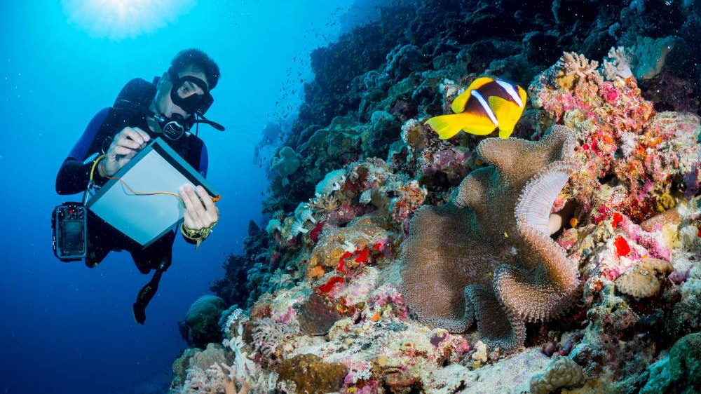

Below please write what you think is the best part of the Web page so far
There are many marine animals in the ocean. On this web page this is going to list the 3 colloest in the ocean!
The Glaucus Atlanticus also know as the Blue Dragon is a type of stining sea slug. They don't really float they just float upside down on the surface over the waves.
Lastly, You dont have to become a marine biologist and work with animals hands on. There are many different careers in Marine Biology like Marine Mammal Trainer, Marine Researcher, Marine Environment Educator/ Oceanography and many others that can be found in the menu!
Here is the link to my second.
Slide the slider to indicate how intrested you are so far!